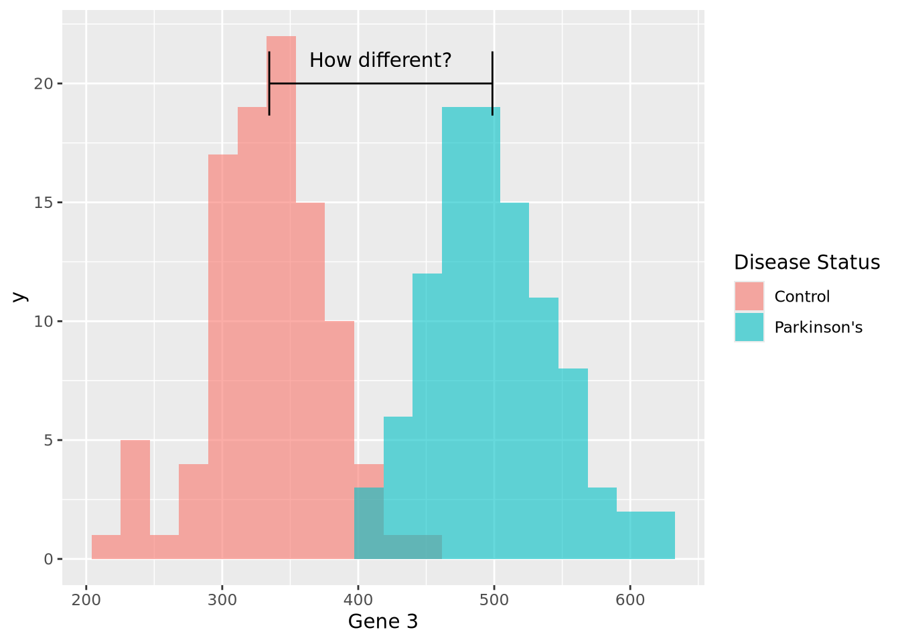
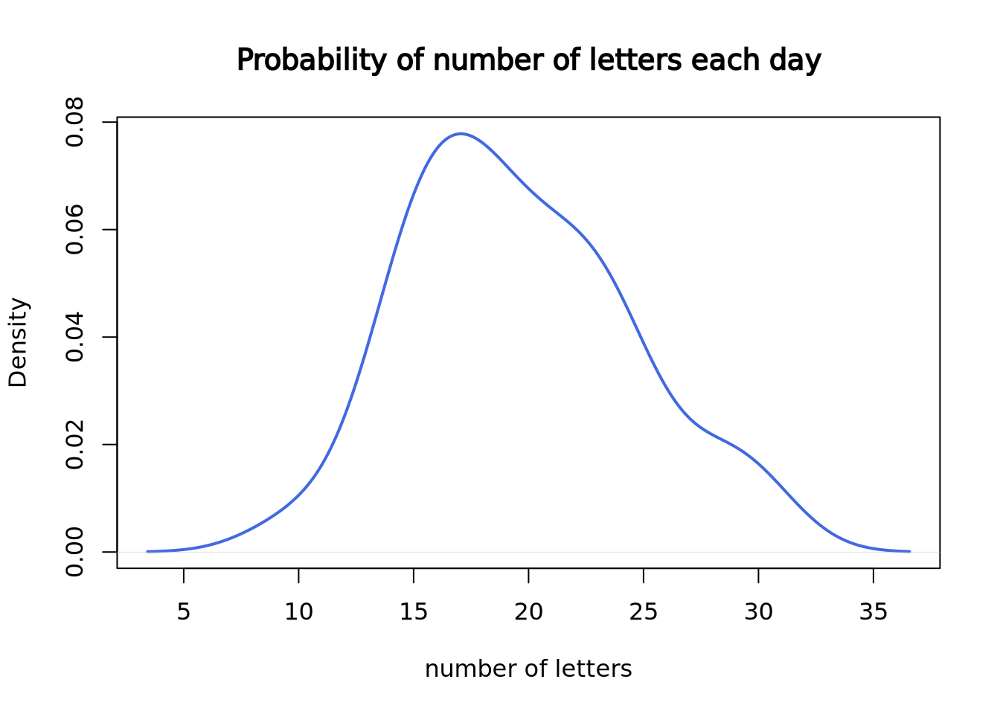

6.2 Statistical Distributions
Biological data, like all data, is uncertain. Measurements always contain noise, but a collection of measurements do not always contain signal. The field of statistics grew from the recognition that mathematics can be used to quantify uncertainty and help us reason about whether a signal exists within a dataset, and how certain we are of that signal. At its core, statistics is about separating the signal from the noise of a dataset in a rigorous and precise way.
One of the fundamental statistical tools used when estimating uncertainty is the statistical distribution, or probability distribution, or simply distribution. There are two broad classes of distributions: statistical, or theoretical, distributions and empirical distributions. In this section we will discuss some general properties of distributions, briefly describe some common probability distributions, and explain how to specify and use these distributions in R.
6.2.1 Random Variables
A random variable is an object or quantity which depends upon random events and that can have samples drawn from it. For example, a six-sided die is a random variable with six possible outcomes, and a single roll of the die will yield one of those outcomes with some probability (equal probability, if the die is fair). A coin is also a random variable, with heads or tails as the outcome. A gene’s expression in a RNASeq experiment is a random variable, where the possible outcomes are any non-negative integer corresponding to the number of reads that map to it. In these examples, the outcome is a simple category or real number, but random variables can be associated with more complex outcomes as well, including trees, sets, shapes, sequences, etc. The probability of each outcome is specified by the distribution associated with the random variable.
Random variables are usually notated as capital letters, like \(X,Y,Z,\) etc. A sample drawn from a random variable is usually notated as a lowercase of the same letter, e.g. \(x\) is a sample drawn from the random variable \(X\). The distribution of a random variable is usually described like “\(X\) follows a binomial distribution” or “\(Y\) is a normally distributed random variable.”
The probability of a random variable taking one of its possible values is usually written \(P(X = x)\). The value of \(P(X = x)\) is defined by the distribution of \(X\). As we will see later in the p-values section, sometimes we are also interested in the probability of observing a value of \(x\) or larger (or smaller). These probabilities are written \(P(X > x)\) (or \(P(X < x)\)). How these probabilities are computed is described in the next section.
6.2.2 Statistical Distribution Basics
By definition, a statistical distribution is a function that maps the possible values for a variable to how often they occur. Said differently, a statistical distribution is used to compute the probability of seeing a single value, or a range of values, relative to all other possible values, assuming the random variable in question follows the statistical distribution. The following is a visualization of the theoretical distribution of a normally distributed random variable:
tibble(
x = seq(-4,4,by=0.1),
`Probability Density`=dnorm(x,0,1)
) %>%
ggplot(aes(x=x,y=`Probability Density`)) +
geom_line() +
labs(title="Probability Density Function for a Normal Distribution")
The plot above depicts to the probability density function (PDF) of a normal distribution with mean of zero and a standard deviation of one. The PDF defines the probability associated with every possible value of \(x\), which for the normal distribution is all real numbers. All PDFs have a closed mathematical form. The PDF for the normal distribution is:
\[ P(X = x|\mu,\sigma) = \frac{1}{\sigma\sqrt{2\pi}}e^{\frac{-(x-\mu)^2}{2\sigma}} \]
The notation \(P(X = x|\mu,\sigma)\) is read like “the probability that the random variable \(X\) takes the value \(x\), given mean \(\mu\) and standard deviation \(\sigma\).” The normal distribution is an example of a parametric distribution because its PDF requires two parameters - mean and standard deviation - to compute probabilities. The choice of parameter values \(\mu\) and \(\sigma\) in the normal distribution determine the probability of the value of \(x\).
Probability density functions are defined for continuous distributions only, as described later in this section. Discrete distributions have a probability mass function (PMF) instead of a PDF, since the probability distribution is subdivided into a set of different categories. PMFs have different mathematical characteristics than PDFs (e.g. they are not continuous and therefore are not differentiable), but serve the same purpose.
In probability theory, if a plausible event has a probability of zero, this does not mean that event can never occur. In fact, every specific value in a distribution that supports all real numbers has a probability of zero (i.e. one specific value out of an infinite number of values). Instead, the probability distribution function allows us to reason about the relative likelihood of observing values in one range of the distribution compared with the others. While most values have extremely small relative probabilities, they never are equal to zero. This is due to the asymptotic properties of probability distributions, where every supported value of the distribution has a non-zero value by definition, though many values may be very close to zero.
The PDF provides the probability density of specific values within the distribution, but sometimes we are interested in the probability of a value being less than or equal to a particular value. We compute this using the cumulative distribution function (CDF) or sometimes just distribution function. In the plot below, both the PDF and CDF are plotted for a normal distribution with mean zero and standard deviation of 1:
tibble(
x = seq(-4,4,by=0.1),
PDF=dnorm(x,0,1),
CDF=pnorm(x,0,1)
) %>%
ggplot() +
geom_line(aes(x=x,y=PDF,color="PDF")) +
geom_line(aes(x=x,y=CDF,color="CDF"),linetype="dashed")
The value of the CDF corresponds to the area under the density curve up to the corresponding value of \(x\); 1 minus that value is the area under the curve greater than that value. The following figures illustrate this:

91% of the probability density is less than the (arbitrary) value of \(x=1.37\), and likewise 9% is greater. This is how p-values are calculated, as described later.
The CDF is also useful for generating samples from the distribution. In the following plot, 1000 random samples were drawn from a uniform distribution in the interval \((0,1)\) and plotted using the inverse CDF function:

The histograms on the margins show the distributions of the \(p\) and \(x\) values for the scatter points. The \(p\) coordinates are uniform, while the \(x\) distribution is normal with mean of zero and standard deviation of one. In this way, we can draw samples from a normal distribution, or any other distribution that has an invertible CDF.
6.2.3 Distributions in R
There are four key operations we performed with the normal distribution in the previous section:
- Calculate probabilities using the PDF
- Calculate cumulative probabilities using the CDF
- Calculate the value associated with a cumulative probability
- Sample values from a parameterized distribution
In R, each of these operations has a dedicated function for each different
distribution, prefixed by d, p, q, and r. For the normal distribution,
these functions are dnorm, pnorm, qnorm, and rnorm:
dnorm(x, mean=0, sd=1)- PDF of the normal distributionpnorm(q, mean=0, sd=1)- CDF of the normal distributionqnorm(p, mean=0, sd=1)- inverse CDF; accepts quantiles between 0 and 1 and returns the value of the distribution for those quantilesrnorm(n, mean=0, sd=1)- generatensamples from a normal distribution
R uses this scheme for all of its base distributions, which include:
| Distribution | Probability Density Function |
|---|---|
| Normal | dnorm(x,mean,sd) |
| t Distribution | dt(x,df) |
| Poisson | dpois(n,lambda) |
| Binomial | dbinom(x, size, prob) |
| Negative Binomial | dnbinom(x, size, prob, mu) |
| Exponential | dexp(x, rate) |
| \(\chi^2\) | dchisq(x, df) |
There are many more distributions implemented in R beyond these, and they all follow the same scheme.
The next two sections will cover examples of some of these distributions. Generally, statistical distributions are divided into two categories: discrete distributions and continuous distributions.
6.2.4 Discrete Distributions
Discrete distributions are defined over countable, possibly infinite sets. Common discrete distributions include binomial (e.g. coin flips), multinomial (e.g. dice rolls), Poisson (e.g. number of WGS sequencing reads that map to a specific locus), etc. Below we describe a few of these in detail.
6.2.4.1 Bernoulli random trail and more
One of the examples for discrete random variable distribution is the Bernoulli function. A Bernoulli trail has only 2 outcomes with probability \(p\) and \((1-p)\). Consider flipping a fair coin, and the random variable X can take value 0 or 1 indicating you get a head or a tail. If it’s a fair coin, we would expect the \(Pr(X = 0) = Pr(X = 1) = 0.5\). Or, if we throw a die and we record X = 1 when we get a six, and X = 0 otherwise, then \(Pr(X = 0) = 5/6\) and \(Pr(X = 1) = 1/6\).
Now consider a slightly complicated situation: what if we are throwing the die \(n\) times and we would like to analyze the total number of six, say \(x\), we get during those \(n\) throws? Now, this leads us to the binomial distribution. If it’s a fair die, we would say our proportion parameter \(p = 1/6\), which means the probability we are getting a six is 1/6 for each throw.
\[ \begin{equation} f(x) = \frac {n!} {x!(n-x)!}p^x (1-p) ^{(n-x)} \end{equation} \]
The geometric random variable, similar to the binomial, is also from a sequence of random Bernoulli trials with a constant probability parameter \(p\). But this time, we define the random variable \(X\) as the number of consecutive failures before the first success. In this case, the probability of \(x\) consecutive failures followed by success on trial \(x+1\) is:
\[ \begin{equation} f(x) = p * (1-p)^x \end{equation} \]
The negative binomial distribution goes one step forward. This time, we are still performing a sequence of independent Bernoulli random trials with a constant probability of success equal to \(p\). But now we would like to record the random variable \(Z\) to be the total number of failures before we finally get to the \(r^{th}\) success. In other words, when we get to the \(r^{th}\) success, we had \(x+r\) Bernoulli random trails, in which \(x\) times failed and \(r\) times succeeded.
\[ \begin{equation} f(x) = \frac {x+r-1} {r-1} p^r {(1-p)}^x \end{equation} \]
6.2.4.2 Poisson
The Poisson distribution is used to express the probability of a given number
of events occurring in a fixed interval of time or space, and these events
occur with a known constant mean rate and independently of the time since
the last event. But no one understands this definition.
The formula for Poisson distribution is:
\[ \begin{equation} f(k; \lambda) = Pr(X=k) = \frac {\lambda^k e^{-\lambda}} {k!} \end{equation} \]
- lambda is the expected value of the random variable X
- k is the number of occurrences
- e is Euler’s number (e=2.71828)
okay, the formula makes it even more confusing.
Imagine you are working at a mail reception center, and your responsibility is to receive incoming letters. Assume the number of incoming letters is not affected by the day of the week or season of the year. You are expected to get 20 letters on average in a day. But, the actual number of letters you receive each day will not be perfectly 20.
You recorded the number of letters you receive each day in a month (30 days). In the following plot, each dot represents a day. The x-axis is calender day, and y-axis is the number of letters you receive on that day. Although on average you are receiving 20 letters each day, the actual number of letters each day vary a lot.
set.seed(2)
my_letter <- rpois(n = 30, lambda = 20)
plot(my_letter,
main = "Letters received each day",
xlab = "day of the month", ylab = "number of letters",
pch = 19, col = "royalblue"
)
abline(a = 20, b = 0, lwd = 2, lty = 3, col = "salmon")
Now, let’s plot the density plot of our data. The \(x\)-axis is the number of letters on a single day, and the \(y\)-axis is the probability.
plot(density(my_letter),
lwd = 2, col = "royalblue",
main = "Probability of number of letters each day",
xlab = "number of letters"
)
Since we only have 30 data points, it doesn’t look like a good curve. But, after we worked at the mail reception for 5000 days, it becomes much closer to the theoretical Poisson distribution with lambda = 20.
set.seed(3)
plot(density(rpois(n = 5000, lambda = 20)),
lwd = 2, col = "royalblue",
main = "Probability of number of letters each day",
xlab = "number of letters"
)
Here is the theoretical Poisson distribution with lambda = 20:
plot(dpois(c(1:40), lambda = 20),
lwd = 2, type = "l", col = "royalblue",
ylab = "probability", main = "Poisson lambda=20"
)
If we want to know what’s the probability to receive, for example, 18 letters,
we can use dpois() function.
dpois(x = 18, lambda = 20)## [1] 0.08439355If we want to know the probability of receiving 18 or less letters,
use ppois() function.
ppois(q = 18, lambda = 20, lower.tail = T)## [1] 0.3814219It is the cumulative area colored in the following plot:
plot(dpois(c(1:40), lambda = 20),
lwd = 2, type = "l", col = "royalblue",
ylab = "probability", main = "Poisson lambda=20"
)
polygon(
x = c(1:18, 18),
y = c(dpois(c(1:18), lambda = 20), 0),
border = "royalblue", col = "lightblue1"
)
segments(x0 = 18, y0 = 0, y1 = 0.08439355, lwd = 2, lty = 2, col = "salmon")
qpois() is like the “reverse” of ppois().
qpois(p = 0.3814219, lambda = 20)## [1] 18Let’s review the definition of Poisson distribution.
- “these events occur in a fixed interval of time or space,” which is a day;
- “these events occur with a known constant mean rate,” which is 20 letters;
- “independently of the time since the last event,” which means the number of
letters you receive today is independent of the letter you receive tomorrow.
more work today don’t guarantee less work tomorrow, just like in real life
Now let’s re-visit the formula.
\[ \begin{equation} f(k; \lambda) = Pr(X=k) = \frac {\lambda^k e^{-\lambda}} {k!} \end{equation} \]
- lambda is the expected value of \(X\), which is 20 letters in this example.
- \(k\) is the number of occurrences, which is the number of letters you get on a specific day.
- e is Euler’s number (e=2.71828)
6.2.5 Continuous Distributions
In contrast with discrete distributions, continuous distributions are defined over infinite, possibly bounded domains, e.g. all real numbers. There are a number of different continuous distributions. Here we will focus on the Normal distribution (Gaussian distribution). A lot of variables in real life are normally distributed, common examples include people’s height, blood pressure, and students’ exam score.
This is what a normal distribution with mean = 0 and standard deviation = 1 looks like:
set.seed(2)
norm <- rnorm(n = 50000, mean = 0, sd = 1)
plot(density(norm),
main = "A Normal distribution", xlab = "x",
lwd = 2, col = "royalblue"
)
Similar as the Poisson distribution above, there are several functions to work
with normal distribution, including rnorm(), dnorm(), pnorm(), and
qnorm().
rnorm() is used to draw random data points from a normal distribution with
a given mean and standard deviation.
set.seed(2)
rnorm(
n = 6, # number of data points to draw
mean = 0, # mean
sd = 1 # standard deviation
) ## [1] -0.89691455 0.18484918 1.58784533 -1.13037567 -0.08025176 0.13242028dnorm() is the density at a given quantile. For instance, in the normal
distribution (mean=0, standard deviation=1) above, the probability density at
0.5 is roughly 0.35.
dnorm(x = 0.5, mean = 0, sd = 1)## [1] 0.3520653plot(density(norm),
main = "A Normal distribution", xlab = "x",
lwd = 2, col = "royalblue"
)
segments(x0 = 0.5, y0 = 0, y1 = 0.3520653, lwd = 2, lty = 3, col = "salmon")
segments(x0 = -5, y0 = 0.3520653, x1 = 0.5, lwd = 2, lty = 3, col = "salmon")
points(x = 0.5, y = 0.3520653, cex = 1.5, lwd = 2, col = "red")
text(x = 1.1, y = 0.36, labels = "0.3521", col = "red2")
pnorm() gives the distribution function. Or, you can think of it as the
cumulative of the left side of the density function until a given value,
which is the area colored in light blue in the following plot.
pnorm(q = 0.5, mean = 0, sd = 1)## [1] 0.6914625plot(density(norm),
main = "A Normal distribution", xlab = "x",
lwd = 2, col = "royalblue"
)
polygon(
x = c(density(norm)$x[density(norm)$x <= 0.5], 0.5),
y = c(density(norm)$y[density(norm)$x <= 0.5], 0),
border = "royalblue", col = "lightblue1"
)
segments(x0 = 0.5, y0 = 0, y1 = 0.3520653, lwd = 2, lty = 2, col = "salmon")
qnorm() gives the quantile function. You can think of it as the “reverse” of
pnorm(). For instance:
pnorm(q = 0.5, mean = 0, sd = 1)## [1] 0.6914625qnorm(p = 0.6914625, mean = 0, sd = 1)## [1] 0.5000001Similarly, other distributions such as chi-square distribution, they all have
the same set of functions: rchisq(), dchisq(), pchisq() and qchisq() etc.
6.2.6 Empirical Distributions
Empirical distributions describe the relative frequency of observed values in a dataset. Empirical distributions may have any shape, and may be visualized using any of the methods described in the Visualizing Distributions section, e.g. a density plot. The following beeswarm and density plot both visualize the same made-up dataset:

Note the \(y\) axis in the plot on the right is scaled as a density, rather than a count. A distribution plotted as a density ensures the values sum to 1, thus making a probability distribution. This empirical distribution looks quite complicated, and cannot be easily captured with a single mean and confidence interval.